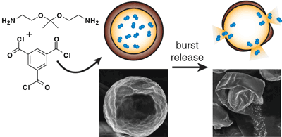

During his undergraduate research he synthesized and characterized a new class of non-biaryl compound posessing a sp2 C-C axis of asymmetry. This kind axial asymmetry is known as atropisomerism when it is caused by hindered rotation around a single bond, and is known in catalysts like BINAP and SEGPHOS.
Kyle Broaders
| Office: Carr G22A |
| Lab: Carr G07 |
| (413) 538-3568 |
| broaders@mtholyoke.edu |
| Curriculum Vitae |
Education and training
| Training | Year | Institution | Research Advisor |
| B.A. | 2006 | Swarthmore College | Robert Paley |
| Ph.D. | 2011 | University of California, Berkeley | Jean Frechét |
| Postdoc | 2014 | University of California, San Francisco | Zev Gartner |
Interests
Throughout his career, Kyle has focused on making new functional molecules. He now uses synthetic and polymer chemistry to design and invent new materials that can control, respond to, or interact with living systems.
- Graduate Research

During his graduate career he co-invented a class of responsive polymers for therapeutic applications. These materials were generated by modifying a water-soluble polymer, like dextran, with hydrophobic acetals. These could then be fashioned into stable microparticles, which could be degraded into biocompatible byproducts under the mildly acidic conditions like those found in lysosomal compartments. These materials showed promise for use in protein-based immunotherapy.

To complement these acid-degradable materials, he also developed a material specifically sensitive to the oxidizing environment found especially in the most potent targeting cells of the immune system.
He developed a system for drug delivery that featured all-or-nothing burst release kinetics. Capsules with impermeable walls could be stored indefinitely until exposed to even mildly acidic conditions, which would erode the walls and cause rupture.
- Postdoctoral Research

During his postdoc, he studied the effect of substrate shape on the behavior of microtissues. He found that tissue can sense geometries much larger than any individual cell by integrating physical cues over long distances. Tissues made from cells having certain mutations lost the ability to sense and respond to their underlying substrate geometry. These mutations are frequently found in cancer, implying a possible mechanism for how precancerous cells begin to cause structural dysfunction.
He collaborated in the development of a genetically expressable valence for programming cell-cell adhesion as a complement to chemical techniques already used in the lab. Arbitrary intracellular domains could be fused with a coupling domain, which readily covalently binds chemically modified DNA. This provides a handle for programming cell-cell interactions at the same time as manipulating intracellular proteins.